A building tile is a hex, or a small clump of hexes, cut so that ONE cell is exactly a mini-map cell - which is exactly a world-map hex, read off whichever map and print preset the table is playing on. That is the whole scale argument and it is not an approximation: a hut tile drops into a mini-map cell, a figure standing beside it is based for the same hex, and one ruler measures the campaign board, the zoom-in sheet and everything built on it. Print the map at a bigger preset and every tile in the box grows with it, because none of the three numbers was ever typed.
Each cell is 16.7 mm across the flats — a world-map hex on the
korvane-reach map at its four-sheet print preset, and therefore a mini-map
cell. Read from the map rather than typed here: print the map at a bigger preset and every tile grows with it.
How many cells a building takes is not written on the building. It is worked out
from the building's own numbers — the effort it takes to raise, and what it has to hold — through the ground model
and ladder in data/buildingtiles.json. Add a worker slot and the build tells you the tile grew.
| Shape | Cells | Trim | With bleed | Tiles | |
|---|---|---|---|---|---|
single | 1 | 16.7 × 19.28 mm | 20.7 × 23.28 mm | 21 | One hex. The anchor and the whole tile. |
pair | 2 | 33.4 × 19.28 mm | 37.4 × 23.28 mm | 21 | Two along the row. The anchor is the left-hand cell. |
triad | 3 | 33.4 × 33.75 mm | 37.4 × 37.75 mm | 10 | Three mutually adjacent - the tightest three cells a hex grid has, and the only three that all touch each other. The anchor is the upper-left cell. |
rhombus | 4 | 41.75 × 33.75 mm | 45.75 × 37.75 mm | 2 | Two rows of two, the lower row stepped half a cell right. Compact, and it seats against a straight run of other tiles on two sides. The anchor is the upper-left cell. |
Printing: print this page at 100% — no “fit to page” — on A4 portrait. Every tile then comes out at its own true size, faces first and backs after, and a piece cut out seats in a mini-map cell without being trimmed. A tile printed 4% small is a tile that does not seat, which is the one promise this line rests on.
54 tiles — 49 buildings and 5 fields. 54 are still waiting on a plate and print as playable blanks; the mint queue says whose turn each one is.
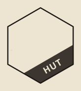
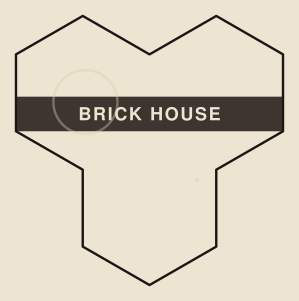
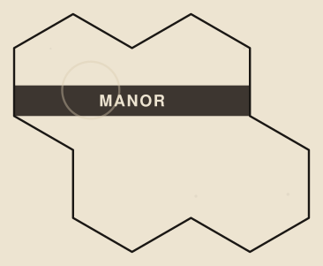
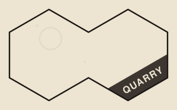
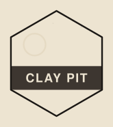
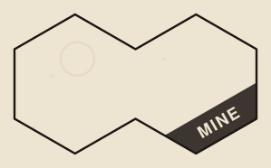
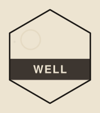
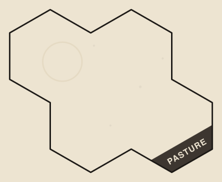
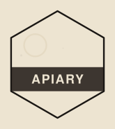
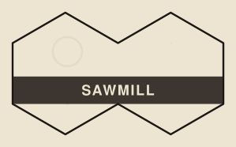
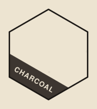
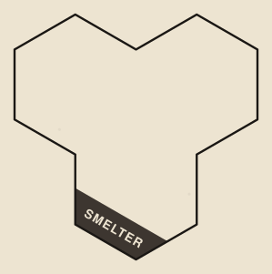
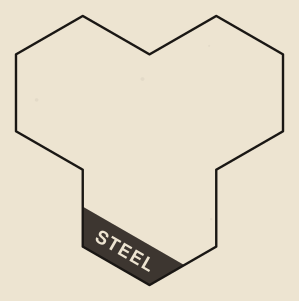
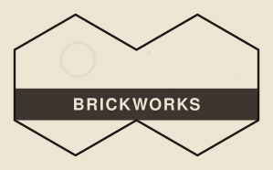
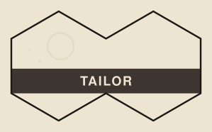
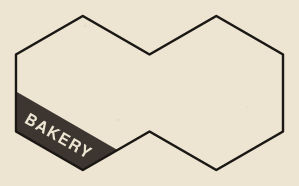
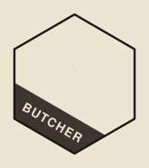
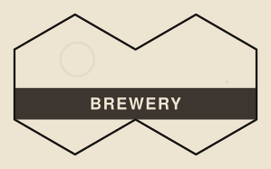
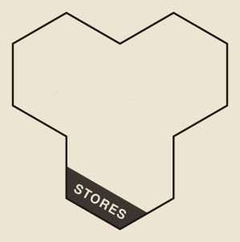
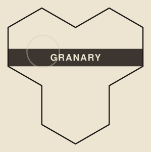
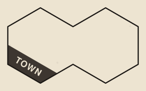
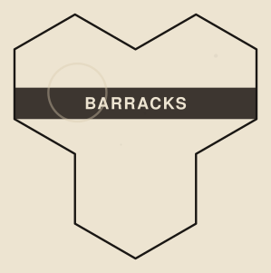
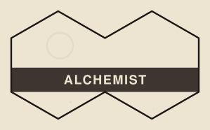
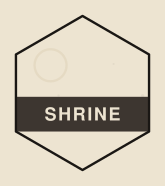
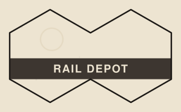
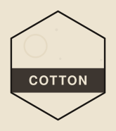
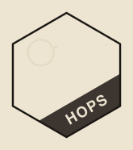
the word, the terrain marks for the ground it may stand on, where the list is short enough to be worth printing — one per tile, all generated. A tile goes down back-up the round its work starts, which is exactly when a player needs to know what ground it may stand on.
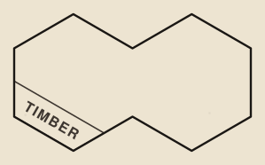
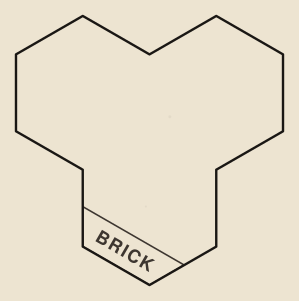
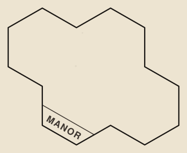
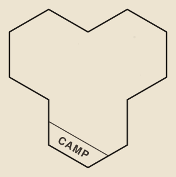
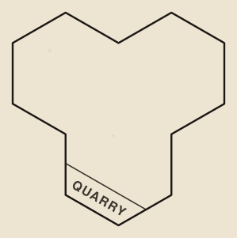
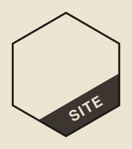
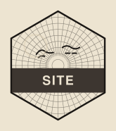
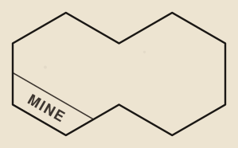
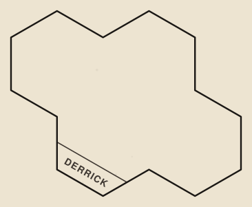
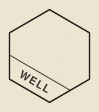
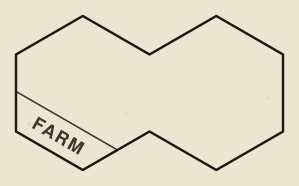
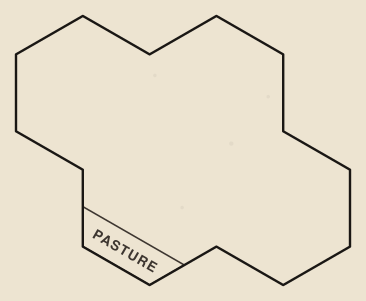
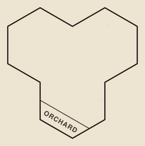
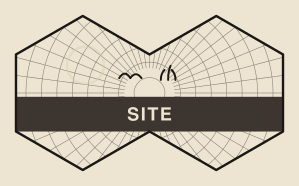
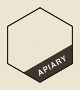
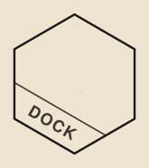
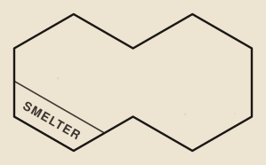
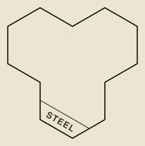
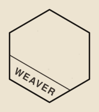
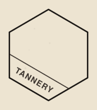
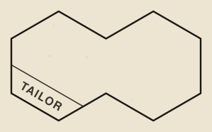
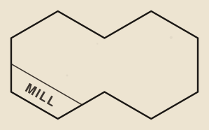
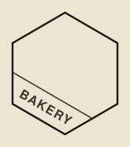